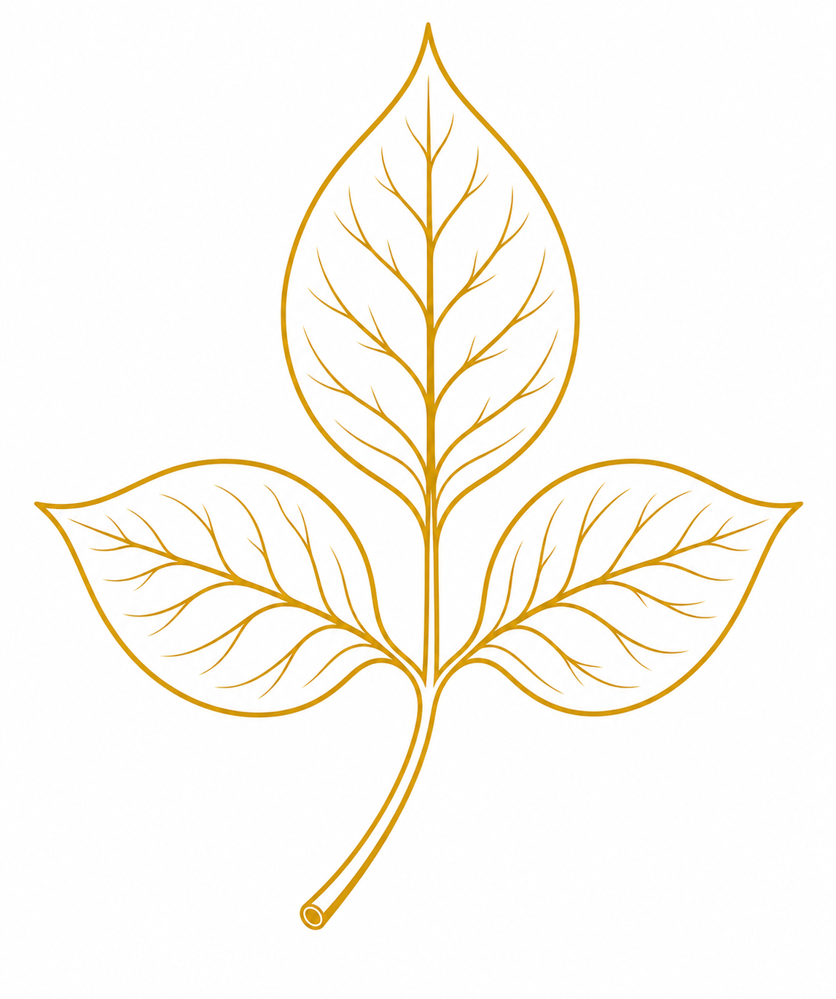
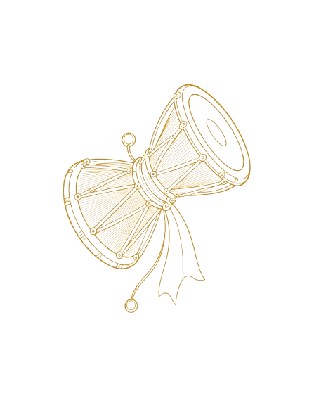
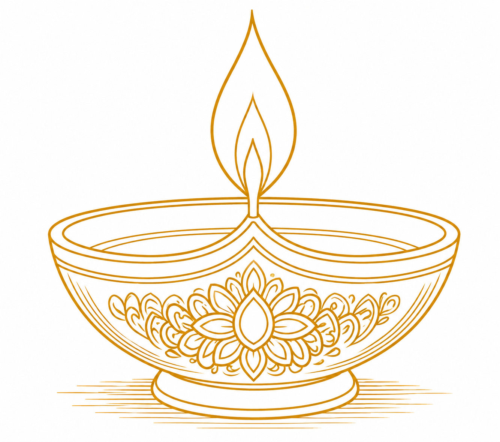
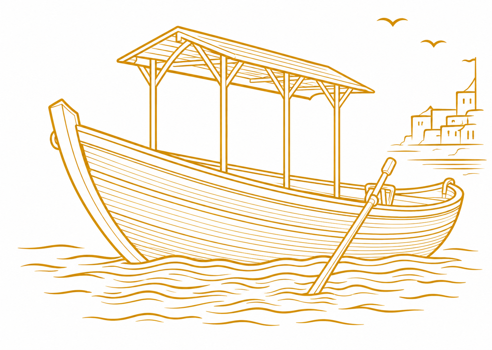

The sacred objects that revolve around the Kashi temple — drawn in gold line, one leaf at a time.

The three-leafed bael (Aegle marmelos) is Shiva's most beloved offering. Kashi's devotees carry garlands of it to Vishwanath every dawn — a ritual so old that its origin has no date, only its unbroken continuation. Each leaf is said to stand for one face of the Trimurti: creation, preservation, and destruction, laid together at the feet of the god who holds all three.
Meet Bel Patta in the 3D temple →
Shiva's hourglass drum, whose first beat is said to have split cosmic silence into the fourteen foundational sounds of Sanskrit — the Maheshvara Sutras from which Panini built the grammar of an entire civilisation. In Kashi's lanes the damroo still marks processions and still calls attention the way it always has: rhythm arriving before language.
Meet the Damroo in the 3D temple →
Each evening at Dashashwamedh Ghat, hundreds of earthen diyas are set upon the Ganga during the Aarti — each flame a small, floating prayer, ascending toward the infinite through fire and current. The clay comes from the Kumhar potters of Varanasi, who have shaped these lamps by hand for generations, unhurried and unbroken.
Meet the Diya in the 3D temple →
Not one of the four objects that revolve around the temple, but present in almost every frame of Kashi all the same: the wooden boats that have carried pilgrims, the dead, and the everyday since before the ghats had names. They are how most people first see the city — from the water, looking back at a skyline of temples reflected in the Ganga.
See the ghats where these boats still gather →